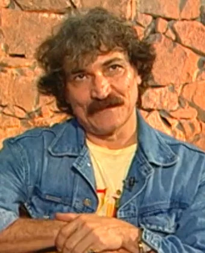
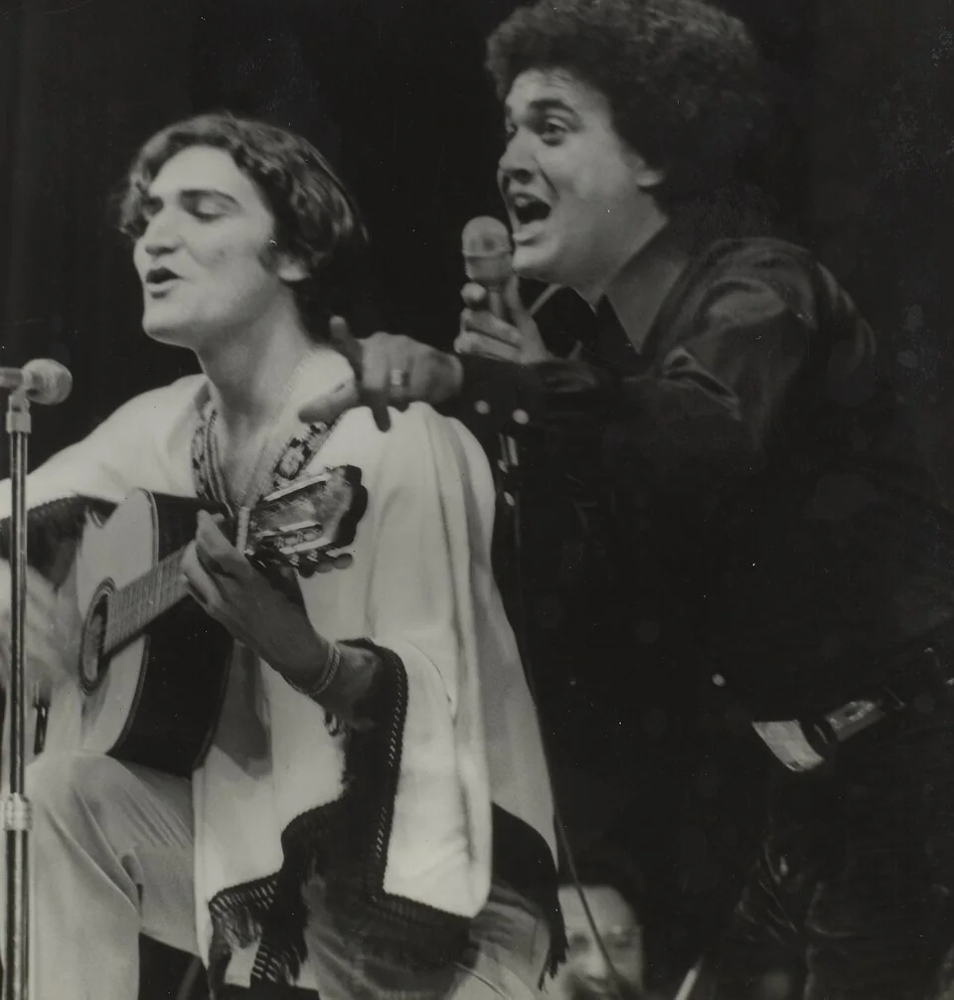

Sobral, Ceará 1946–2017
Belchior
Apenas um rapaz latino-americano
Onde você quer ouvir?
Álbum em destaque 1976
Alucinação
De “Como Nossos Pais” a “Velha Roupa Colorida”, um disco sobre juventude, desencanto e a vontade de seguir em frente.
Discos essenciais
Da estreia ao fim dos anos 1970.
-
1974
Belchior
A estreia, também conhecida como Mote e Glosa.
-
1976
Alucinação
O disco de “Apenas um Rapaz Latino-Americano”.
-
1977
Coração Selvagem
Inclui a faixa-título e “Galos, Noites e Quintais”.
-
1978
Todos os Sentidos
Reúne “Divina Comédia Humana” e “Brincando com a Vida”.
-
1979
Era uma Vez um Homem e Seu Tempo
Com “Medo de Avião” e “Comentário a Respeito de John”.
De Sobral
para o Brasil
Antônio Carlos Belchior nasceu no Ceará e fez da experiência de sair de casa um tema recorrente de suas canções.
Infância no Ceará
Nascido em Sobral, cresceu entre cantorias e música de rádio. Mais tarde se mudou para Fortaleza, onde estudou medicina antes de seguir a carreira musical.
“Na Hora do Almoço”
A canção venceu o IV Festival Universitário da Música Popular Brasileira, no Rio de Janeiro, e levou seu nome a um público maior.

O ano de Alucinação
O segundo álbum saiu no mesmo ano em que Elis Regina gravou “Como Nossos Pais” e “Velha Roupa Colorida” em Falso Brilhante.